CÁCH KHẮC PHỤC HƯ HỎNG CÁC HỆ THỐNG DO ECU ĐIỀU KHIỂN > QUY TRÌNH KIỂM TRA MẠCH ĐIỆN TỬ |
| KIỂM TRA CƠ BẢN |
KHI ĐO ĐIỆN TRỞ CỦA CÁC LINH KIỆN ĐIỆN TỬ
Trừ các trường hợp đặc biệt, tất cả các điện trở phải được đo tại nhiệt độ môi trường 20oC. Bởi vì giá trị điện trở có thể ngoài tiêu chuẩn nếu được đo tại nhiệt độ cao ngay lập tức sau khi xe chạy, việc đo phải được thực hiện khi động cơ đã nguội.
| 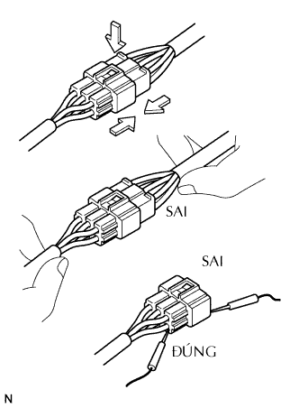 |
LÀM VIỆC VỚI CÁC GIẮC NỐI
Khi tháo giắc nối có khoá hãm, trước hết hãy ấn giắc nối về phía ăn khớp và tháo khoá hãm và sau đó bằng bóp vấu hãm và tách giắc ra.
Để kéo các giắc nối điện, kéo vào chính giắc cắm, không kéo vào dây.
Trước khí nối giắc, kiểm tra rằng chúng không bị biến dạng, hỏng và mất các cực.
Nối giắc có khoá phải được cắm chặt cho đến khi nghe thấy tiếng kêu tách.
Trong trường hợp kiểm tra giắc nối bằng đồng hồ đo điện của Toyota, thực hiện đo từ phia sau (phía dây điện) của giắc nối bằng đầu đo nhỏ.
| 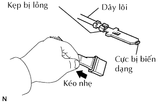 |
KIỂM TRA GIẮC NỐI
Kiểm tra khi đã nối giắc: Hãy ép giắc nối với nhau để xác nhận rằng chúng đã được nối hoàn toàn và hãm chắc.
Kiểm tra khi giắc nối đã được tháo ra: Kiểm tra bằng cách kéo nhẹ dây điện (thiếu cực, tình trạng lỏng cực, lõi dây gẫy). Kiểm tra bằng quan sát xem có bị gỉ, mẩu kim loại, nước và cong các cực không (rỉ, các vật lại lọt vào, sự biến dạng của các cực).
| 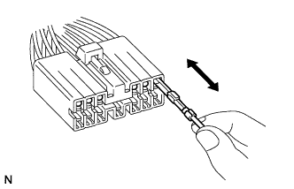 |
Kiểm tra áp lực tiếp xúc của cực: Chuẩn bị cực giống như cực đực. Bằng cách cắm nó vào cực cái, kiểm tra tình trạng ăn khớp và lực trượt.
| 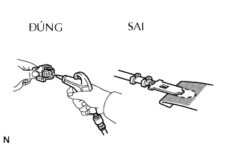 |
PHƯƠNG PHÁP SỬA CHỮA CỰC CỦA GIẮC NỐI
Trong trường hợp có bất kỳ cặn bẩn nào ở phần tiếp xúc, làm sạch điểm tiếp xúc bằng súng hơi hay giẻ mềm. Không bao giờ được đánh bóng điểm tiếp xúc bằng giấp ráp do lớp mạ có thể bị bong.
Trong trường hợp áp lực tiếp xúc không bình thường, thay cực cái. Lúc này, nếu cực đực của phía đối diện được mạ vàng (màu vàng), hãy dùng cực cái mạ vàng và nếu nó được mạ bạc (màu bạc), hãy dùng cực mạ bạc.
Các cực bị hỏng, biến dạng hoặc bị ăn mòn phải được thay thế. Nếu cực không được hãm vào vỏ, thì phải thay vỏ giắc.
| 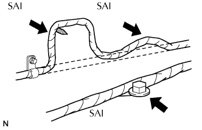 |
LÀM VIỆC VỚI DÂY ĐIỆN
Trong trường hợp tháo dây điện, kiểm tra tình trạng dây dẫn và kẹp trước khi làm việc để đảm bảo phục hồi chắc chắn.
Không bao giờ xoắn, kéo hay để chùng dây điện quá nhiều.
Không bao giờ làm cho dây điện tiếp xúc với nhiệt độ cao, chi tiết quay, chuyển động, rung hay góc sắc (mép của các tấm thép, đầu vít v.v.).
Khi lắp các chi tiết, không bao giờ để dây điện mắc vào chúng.
Không bao giờ làm vỡ vỏ bọc của dây điện. Nếu nó đứt hay bị vỡ, Hãy sửa vỏ bọc bằng băng dính hoặc là thay thế dây điện.
| KIỂM TRA HỞ MẠCH |
| 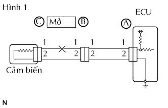 |
Để kiểm tra hở mạch trong dây điện như trong hình 1, Hãy kiểm tra theo điện trở hoặc điện áp, được trình bày dưới đây.
| 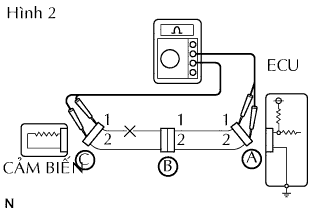 |
Kiểm tra điện trở.
Ngắt các giắc nối A và C và đo điện trở giữa chúng.
| Nối dụng cụ đo | Điều kiện tiêu chuẩn |
| Cực 1 của giắc A - Cực 1 của giắc C | 10 kΩ trở lên |
| Cực 2 của giắc A - Cực 2 của giắc C | Dưới 1 Ω |
| 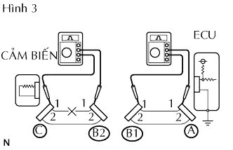 |
Ngắt giắc nối B và đo điện trở giữa các giắc.
| Nối dụng cụ đo | Điều kiện tiêu chuẩn |
| Nối cực 1 của giắc A - Nối cực 1 của giắc B1 | Dưới 1 Ω |
| Nối cực 1 của giắc B2 - Cực 1 của giắc C | 10 kΩ trở lên |
| 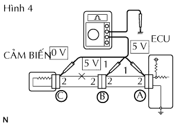 |
Kiểm tra điện áp.
Trong một mạch được cấp điện áp (đến các cực của giắc nối ECU), hở mạch có thể được kiểm tra thông qua việc kiểm tra điện áp.
Với các giắc nối còn đang cắm, hãy đo điện áp giữa mát thân xe và các cực (theo thứ tự): 1) cực 1 của giắc "A", 2) cực 1 của cực B và 3) cực 1 của giắc C.
| Nối dụng cụ đo | Điều kiện tiêu chuẩn |
| Nối cực 1 của giắc A - Mát thân xe | 5 V |
| Nối cực 1 của giắc B - Mát thân xe | 5 V |
| Nối cực 1 của giắc C - Mát thân xe | Dưới 1 V |
| KIỂM TRA NGẮN MẠCH |
| 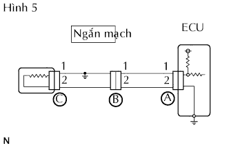 |
Nếu dây điện bị nối tắt với đất như hình 5, tìm ra vị trí bằng cách tiến hành "Kiểm tra thông mạch với mát".
| 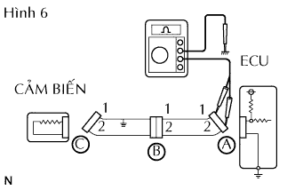 |
Kiểm tra điện trở với mát.
Ngắt các giắc nối A và C và đo điện trở.
| Nối dụng cụ đo | Điều kiện tiêu chuẩn |
| Nối cực 1 của giắc A - Mát thân xe | Dưới 1 Ω |
| Nối cực 2 của giắc A - Mát thân xe | 10 kΩ trở lên |
| 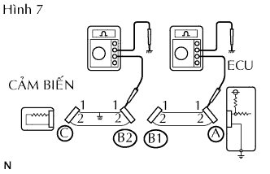 |
Ngắt các giắc nối B rồi đo điện trở.
| Nối dụng cụ đo | Điều kiện tiêu chuẩn |
| Nối cực 1 của giắc A - Mát thân xe | 10 kΩ trở lên |
| Nối cực 1 của giắc B2 - Mát thân xe | Dưới 1 Ω |
| KIỂM TRA VÀ THAY THẾ ECU |
Trước tiên hãy kiểm tra mạch nối mát của ECU. Nếu nó hỏng, hãy sửa chữa nó. Nếu nó bình thường, ECU có thể bị hỏng. Tạm thời thay thế ECU bằng một ECU bình thường khác và kiểm tra nếu các triệu chứng xuất hiện. Nếu triệu chứng hư hỏng biến mất, thì hãy thay thế ECU ban đầu.
| 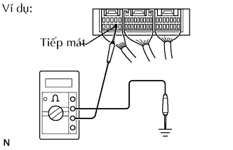 |
Đo điện trở giữa cực nối mát ECU và nối mát thân xe.
| 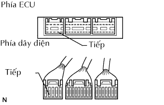 |
Ngắt giắc nối ECU, kiểm tra các cực nối mát trên phía ECU và phía dây điện xem có bị cong không và kiểm tra áp lực tiếp xúc.